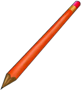
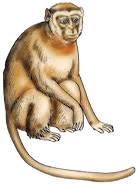
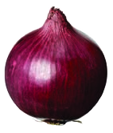
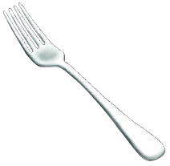
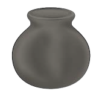
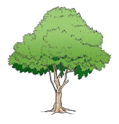
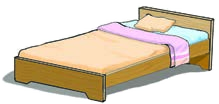
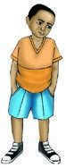

Exercise 1: Name pictures - part 3
Write the names of the following things
22.

A picture of One long pencil with a sharpened point and an eraser at the other end.23.

A picture of a monkey sitting upright with arms, legs, small ears, and a long curved tail.24.

A picture of One round onion bulb with papery skin, roots below, and a short stem above.25.

A picture of a table fork with a long handle and four pointed prongs.26.

A picture of a round cooking pot with two side handles and an open top.27.

A picture of a tree with one trunk, branching limbs, and a wide leafy crown.28.
A picture of an adult woman standing upright in a long dress.29.

A picture of a bed with a mattress, pillow, headboard, and four legs.30.

A picture of a young boy standing upright in a shirt, shorts, and shoes.